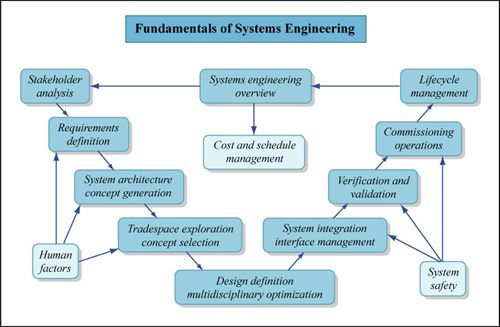

|
Systems Engineering |
What is Systems Engineering?
Systems Engineering integrates all the disciplines and specialty groups into a team effort forming a structured development process that proceeds from concept to production to operation. Systems Engineering considers both the business and the technical needs of all customers with the goal of providing a quality product that meets the user needs.
Definition of the International Council on Systems Engineering
The technique of using knowledge from various branches of engineering and science to introduce technological innovations into the planning and development stages of a system.
The Free Dictionary
How Could This Help You?
Systems engineering may be used as a management technology toolset to assist and support policy making, planning, decision making, and associated resource allocation or action deployment. It accomplishes this by quantitative and qualitative formulation, analysis, and interpretation of the impacts of action alternatives upon the needs perspectives, the institutional perspectives, and the value perspectives of clients to a systems engineering study. Each essential phase of a systems engineering effort—definition, development, and deployment—is associated with formulation, analysis, and interpretation. These enable systems engineers to define the needs for a system, develop the system, and deploy it in an operational setting and provide for maintenance over time, all within time and cost constraints.
What Can Skysong Do For You?
Skysong can provide the expertise of building and integrating systems as a holistic approach looking at systems as a whole rather than as individual components. This helps break down the fundamental tendency to break projects down piecemeal which can cause systemwide issues to be overlooked in individual endeavours. This can be performed in several ways from helping produce proof of concept systems that can then be scaled up to full production systems by the relevant operation and project teams to ensure an acceptable fit to providing help and advice with existing systems breaking down running systems to component parts and documenting the system as a whole in a single source.